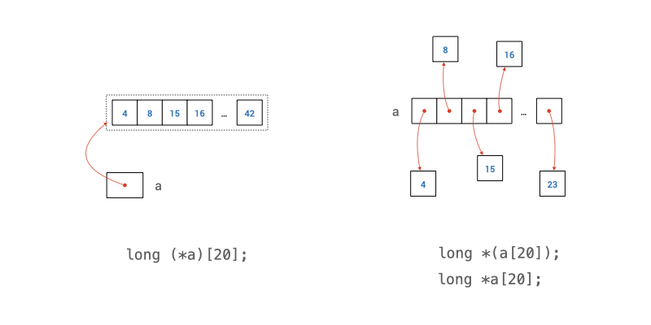
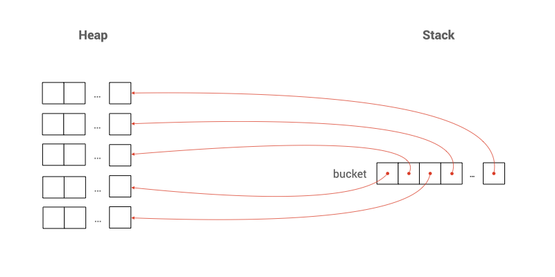
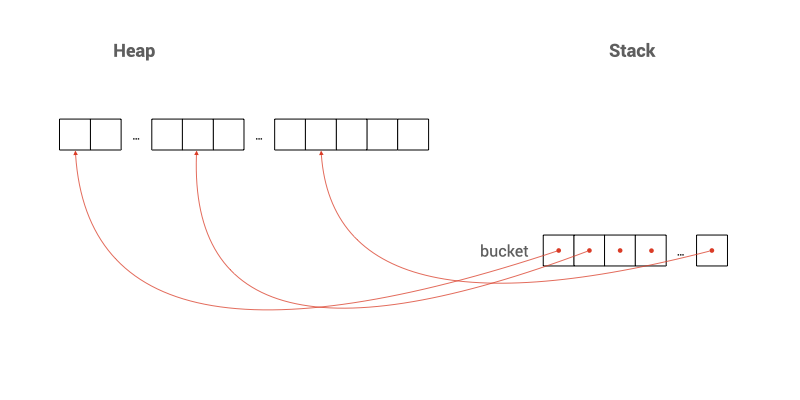
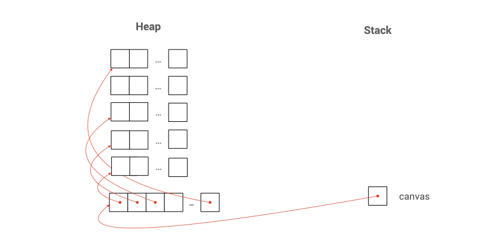

Unit 19: Multi-Dimensional Arrays
Learning Objectives
After completing this unit, students should:
- be comfortable reading and writing code that involves multi-dimensional arrays
- be able to declare and allocate multi-dimensional arrays on the stack and the heap
- be able to decide when to use a fixed-size multi-dimensional array, a dynamically-sized multi-dimensional array, or a mixture of the two
- understand how we can pass a multi-dimensional array into a function
- understand the differences in C syntax, between an array of pointers and a pointer to an array.
- be able to declare and allocate jagged arrays
Fixed-size 2D Array
At the beginning of Unit 14, we say that an array can hold one or more values of some type \(T\). \(T\) can be any type, including an array! So, we can have an array where each element is another array.
For instance,
1 | |
Here, we have an array of 10 elements, and each element is an array of 20 long values.
When we access the elements in the array, we can use the notation matrix[i][j]. This notation is actually a simpler form of (matrix[i])[j] -- matrix[i] refers the i+1-th element in matrix, which is an array of 20 elements. So (matrix[i])[j] accesses the j+1-th element in this array of 20 elements.
Such an array is called a two-dimensional array, or 2D array. We can have a 3D array, 4D array, and so on.
We have seen three types of arrays. On the stack, we have fixed-length arrays and variable-length arrays. On the heap, we have dynamically allocated arrays. A 2D array can mix different types of arrays. Since we ban the use of variable length arrays, we will focus on fixed-length arrays and dynamically allocated arrays only.
The example matrix above is a fixed-length 2D array. In the memory, a continuous space to store 200 long values is been allocated. We can visualize this as having 10 rows of long array, each array contains 20 columns of long values.
Since matrix[i] is an array in the example above, matrix[i] decays to &matrix[i][0], the address of the first element in matrix[i]. After decay, matrix[i] can be treated as having the type long *.
Further, since matrix[i] is a 1D array, we can pass matrix[i], which is one of the rows in matrix, just like a normal 1D array:
1 2 3 | |
We can then invoke the function bar like:
1 | |
Things get a bit tricky when we want to pass a 2D array into a function. By array decay, when we use the array name matrix, it is equivalent to &matrix[0], which is the address of the first element in matrix, which is the memory address of an array of 20 long elements.
Pointer to Array
Since an array in C consists only of a contiguous region of memory that stores the elements of the array, the address of an array is the same as the address of the first element of the array.
The following five statements would print out exactly the same values.
1 2 3 4 5 | |
We have seen that matrix[0] and &matrix[0][0] both are memory addresses of a long value. The variable matrix and &matrix[0], however, have the type memory address of a long array. To declare a variable a that is the memory address of an array, we write:
1 | |
We can understand this as follows: (*a) is an array of 20 long values. * is the deference operator to an address, so a must then be a memory address of an array of 20 long values.
C is very particular about the type of an array. An array of 20 long values is different from an array of 19 long values. Trying to point a pointer to an array of 20 long elements to an array of 19 long elements would lead to error:
1 2 3 4 5 | |
In other words, the size of a fixed-size array is part of the type information.
To pass a 2D array into a function, say foo, we can write
1 2 3 4 | |
Here, we cannot omit the number 20 since it is part of the type information.
With the declaration above, we can then call the function foo and pass in the 2D array as such:
1 | |
Note that the position of the parentheses when we declare a variable that is a pointer to an array is important and is not optional. If we write it as either:
1 2 | |
then we are declaring a as an array of 20 pointers to long instead! We will see such declaration in use in the next section.

Fixed Size Array of Dynamically Allocated Array
Suppose that we know only one of the dimensions of the array in advance, but not the other dimension. We can allocate a fixed-length array for the known dimension, and allocate the other dimension dynamically using calloc. We can declare an array like this:
1 2 3 4 5 | |

Here, bucket is a 1D array of 10 pointers to double. So, we can easily pass bucket to a function just like any other 1D array:
void baz(size_t num_of_rows, size_t num_of_cols, double **bucket)void baz(size_t num_of_rows, size_t num_of_cols, double *bucket[])void baz(size_t num_of_rows, size_t num_of_cols, double *bucket[num_of_cols])
Accessing individual elements in such type of array is no different from accessing a fixed-length 2D array: we use bucket[i][j].
Just like a dynamically allocated 1D array, we need to free the allocated memory after we are done:
1 2 3 | |
Dealing with Allocation Failures
Just like a dynamically allocated 1D array, we need to deal with the possibility that memory allocation can fail. To do this, we need to check if each calloc is successful or not. In case one of the memory allocations fails, then we would have a partially allocated 2D array. We will need to deallocate all those partially allocated memory with free.
1 2 3 4 5 6 7 8 9 10 11 12 | |
An alternative is to allocate a single contiguous region of memory with a single calloc call, and then point the pointers in our array in the right memory location.
1 2 3 4 5 6 7 8 9 10 | |

Dynamically Size 2D Array
Suppose that we do not know both dimensions in advance, then we can allocate both dimensions of the array dynamically on the heap.
1 2 3 4 5 6 7 8 9 10 11 12 13 14 | |

Passing such an array into a function is no different from a 2D array where only one dimension is dynamically allocated above.
Remember to free the allocated memory for both dimensions after we are done, as well as if one of the rows encounters an error.
1 2 3 4 | |
Note that during the deallocation of memory, we need to do it in the reverse order of memory allocation. If we call free(canvas) first, we are no longer guaranteed to be able to access canvas[i] with the correct pointers inside, so calling free(canvas[i]) after free(canvas) might lead to an error.
Just like before, there is an alternative where we can also allocate a single contiguous region of memory with a single calloc call, and then point the pointers in our array in the right memory location.
1 2 3 4 5 6 7 8 9 10 11 12 13 14 15 16 17 18 | |
If we allocate a single contiguous region of memory for canvas, then we only need to free(canvas[0]) and free(canvas) once we are done.
Jagged Array
One advantage of using a dynamically allocated array is that it allows a jagged 2D array, where each row has a different size. The example below allocate memory for a 2D array that is shaped like a half-square: the first row has one element, the second row has two elements, the third row has three, and so on.
1 2 3 4 | |
Initializing a Multidimensional Array
Just like a 1D-array, we can initialize a multi-dimensional array with initializers during declaration:
1 2 3 4 5 | |
{ and } here. There are other variations to the syntax above, which you may read up on your own if you are interested as we do not need to write complex initializers for multi-dimensional arrays that often.
Problem Set
Problem 19.1
Suppose we have a 2D array
1 2 3 4 | |
Suppose we ignore the compile warning generated by the code above and execute the program anyway. Explain what happens when Line 3 and Line 4 are executed.
Problem 19.2
We need to represent the distance in km between every major city in the world. Let's label every city with a number, ranging from 0 .. \(n-1\), where \(n\) is the number of cities. The distance between city \(i\) and \(j\) is the same as the distance between city \(j\) and \(i\). The distance can be represented with long.
Explain how you would represent this information using a jagged two-dimensional array in C efficiently. We have information about a few thousand cities to store.
Explain how you would write a function long dist(long **d, long i, long j) to retrieve the distance between any two cities \(i\) and \(j\).